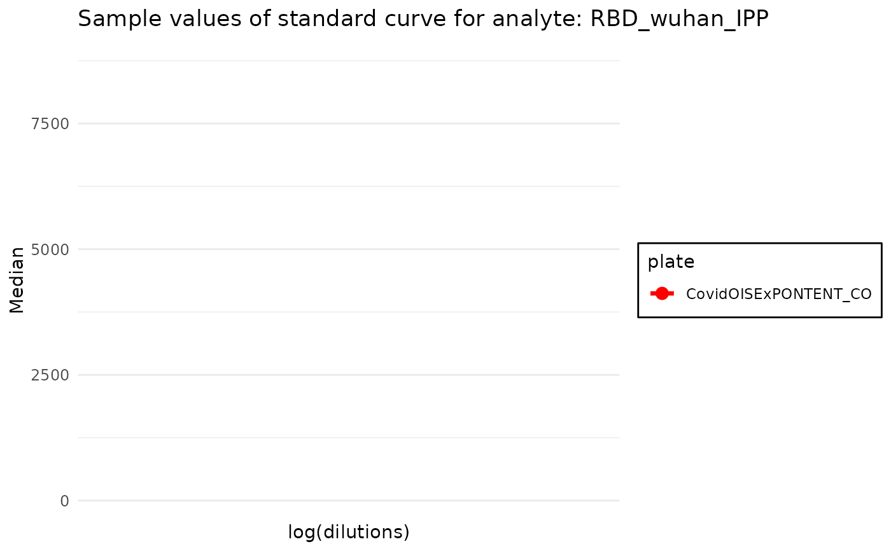
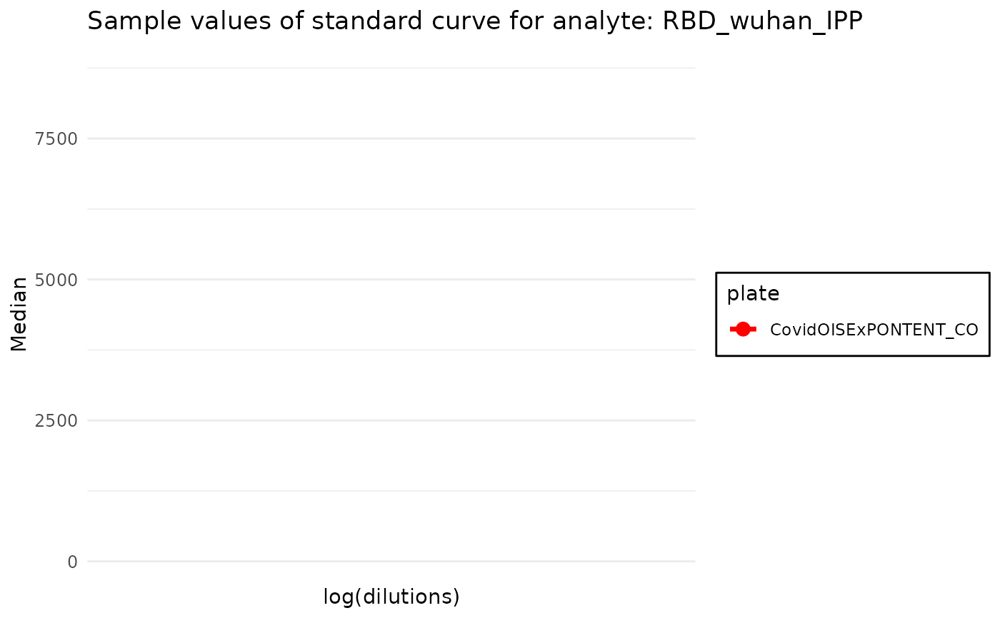

Plot standard curves of plate or list of plates
plot_standard_curve_antibody.RdPlot standard curves of plate or list of plates
plot_standard_curve_antibody(
plates,
antibody_name,
data_type = "Median",
decreasing_dilution_order = TRUE,
log_scale = c("all"),
plot_line = TRUE,
verbose = TRUE
)Arguments
- plates
A single plate object or a list of plates. Plates should contain the same number of standard curve samples and same diltuions
- antibody_name
Name of the antibody of which standard curve we want to plot.
- data_type
Data type of the value we want to plot - the same datatype as in the plate file. By default equals to
Net MFI- decreasing_dilution_order
If
TRUEthe dilutions are plotted in decreasing order,TRUEby default- log_scale
Which elements on the plot should be displayed in log scale. By default
"dilutions". IfNULLorc()no log scale is used, if"all"orc("dilutions", "MFI")all elements are displayed in log scale.- plot_line
If
TRUEa line is plotted,TRUEby default- verbose
If
TRUEprints messages,TRUEby default
Value
ggplot object with the plot
Examples
plate_filepath <- system.file("extdata", "CovidOISExPONTENT_CO.csv", package = "PvSTATEM", mustWork = TRUE) # get the filepath of the csv dataset
plate <- read_data(plate_filepath)
#> Reading MBA plate csv file...
#>
#>
#> Warning: incomplete final line found on '/home/runner/work/_temp/Library/PvSTATEM/extdata/CovidOISExPONTENT_CO.csv'
#> (WARNING)
#> The datatype Units contains NA values
#> (WARNING)
#> The datatype Analysis Types contains NA values
#> (NOTE)
#> CRC block found, omiting it for now
#> New plate object has been created with name:CovidOISExPONTENT_CO !
#>
#> Running consistency checks...
#> (WARNING)
#> Plate contains at least one region that did not reach the specified bead count - 50
plot_standard_curve_antibody(plate, antibody_name = "RBD_wuhan_IPP")
#> (WARNING)
#> Blank values not adjusted - Consider adjusting the blank values using function `plate$blank_adjustment`
#> Warning: Removed 11 rows containing missing values or values outside the scale range
#> (`geom_line()`).
#> Warning: Removed 11 rows containing missing values or values outside the scale range
#> (`geom_point()`).
 plot_standard_curve_antibody(plate, antibody_name = "RBD_wuhan_IPP", log_scale = c("dilutions")) # `log_scale` option allows to apply log scale on selected axis
#> Warning: Removed 11 rows containing missing values or values outside the scale range
#> (`geom_line()`).
#> Warning: Removed 11 rows containing missing values or values outside the scale range
#> (`geom_point()`).

plot_standard_curve_antibody(plate, antibody_name = "RBD_wuhan_IPP", decreasing_dilution_order = FALSE) # reversed x - axis
#> Warning: Removed 11 rows containing missing values or values outside the scale range
#> (`geom_line()`).
#> Warning: Removed 11 rows containing missing values or values outside the scale range
#> (`geom_point()`).

plot_standard_curve_antibody(plate, antibody_name = "RBD_wuhan_IPP", log_scale = c("dilutions")) # `log_scale` option allows to apply log scale on selected axis
#> Warning: Removed 11 rows containing missing values or values outside the scale range
#> (`geom_line()`).
#> Warning: Removed 11 rows containing missing values or values outside the scale range
#> (`geom_point()`).

plot_standard_curve_antibody(plate, antibody_name = "RBD_wuhan_IPP", decreasing_dilution_order = FALSE) # reversed x - axis
#> Warning: Removed 11 rows containing missing values or values outside the scale range
#> (`geom_line()`).
#> Warning: Removed 11 rows containing missing values or values outside the scale range
#> (`geom_point()`).
